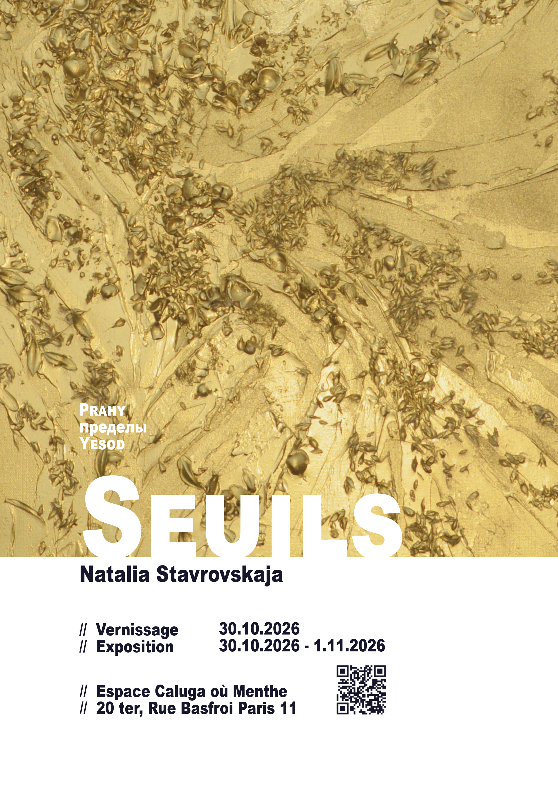
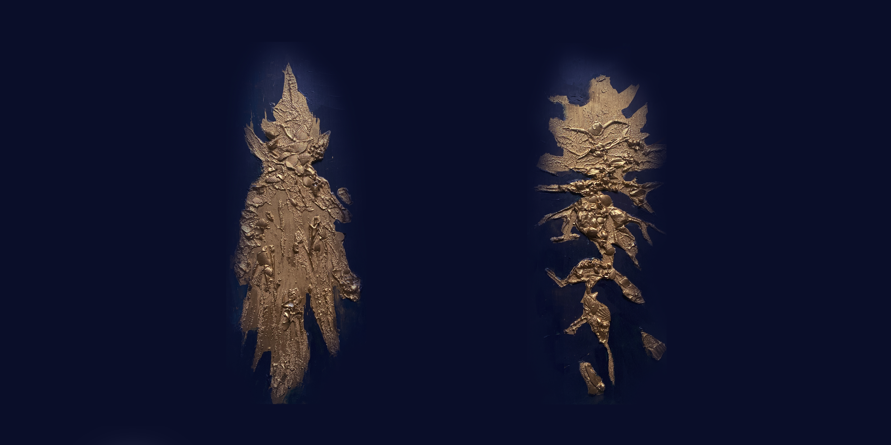
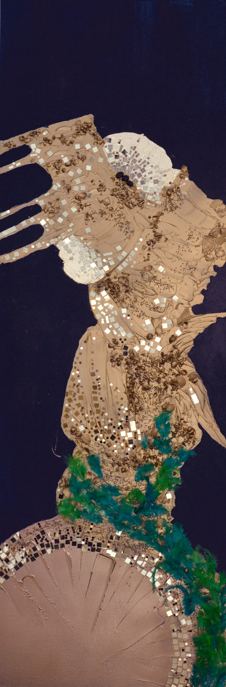

Œuvres 2020 - 2026
Il y a des choses sacrées
- Emile Durkeim
Pour moi, une "crise spirituelle" est toujours un signe de santé. Elle est une tentative de se retrouver soi-même, d'acquérir une foi nouvelle. Elle est le lot de tous ceux qui se posent des problèmes d'ordre spirituel. L'âme recherche l'harmonie, or la vie est remplie de dissonances : cet écartèlement est le stimulant du mouvement, la source à la fois de notre douleur et de notre espérance. Il est en même temps la confirmation de notre profondeur spirituelle, de notre potentiel spirituel.
- A. Tarkovski

Seuils — Natalia Stavrovskaja
Vernissage le 30.10.2026
Exposition du 30.10.2026 au 1.11.2026
Atelier Caluga où Menthe
50 Rue Basfroi, Paris 11
 Prahy 1 (Seuils)
Prahy - Seuils - Пределы - Yesod
Prahy 1 (Seuils)
Prahy - Seuils - Пределы - Yesod
 Prahy 2 (Seuils)
Prahy - Seuils - Пределы - Yesod
Prahy 2 (Seuils)
Prahy - Seuils - Пределы - Yesod
 Saint Jean Baptiste // Daat
Saint Jean Baptiste
Saint Jean Baptiste // Daat
Saint Jean Baptiste
 Abraham // Hesed
Abraham
Abraham // Hesed
Abraham
 Quetzalcoatl // Serpent à plumes
Quetzalcoatl
Quetzalcoatl // Serpent à plumes
Quetzalcoatl
 Tlaloc // Dieu des Eaux et des Points Cardinaux
Tlaloc
Tlaloc // Dieu des Eaux et des Points Cardinaux
Tlaloc

Shoort // Le Paysage vivant Shoort Tlalotli // Dieux de la pluie
Tlalotli
Tlalotli // Dieux de la pluie
Tlalotli

Tezcatlipoca // Invisible-et-Impalpable Tezcatlipoca